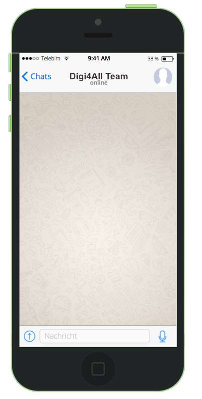

# hier die Chat-Texte erfassen. # > markiert ausgehenden Text # < markiert empfangenen Text # eine Zahl vor dem < oder > # gibt die Wartezeit vor der Ausgabe # in Millisekunden an (default 1000ms). # Das "#" definiert einen Kommentar, # ab da bis Zeilenende wird ignoriert. # Bilder einbinden per HTML img-Tag, # z.B. <img src="http://ogy.de/zyt6"> # Chat-Fenster leeren: Seite neu laden. # # Hier ein kleiner Beispiel-Chat: > Hallo... 3000< hi 2500> Wollen Sie wissen, was Sie in diesem Modul lernen können? 2000< UN-BE-DINGT! 2500> Ok! Es geht um Kommunikation, Interaktion und Kollaboration. 2500<Ah... deswegen diese alberne Chat-Simulation 3000>Äh... 2000>Genau. 2000>Also... Sie lernen Folgendes: 2000< Ich bin gespannt... 2500> Sie lernen... 2500>was Kommunikation ist 2000< ok 2500>was mediale Kommunikation ist 2500>was Kommunikation von Interaktion unterscheidet 2500< Da gibts einen Unterschied? 2500>Gute Frage. Wir klären das. 2000< Na zum Glück 2500>:) 3500> Ok, ich mach weiter. 2000< Prima. 2500>Sie lernen, wie die Digitalisierung unsere Kommunikation beeinflusst 2500>welcher Stellenwert der Kommunikationskompetenz unter den Bedingungen der Digitalisierung in der Schule zukommt 4000<Hat mich schon gewundert, wo der Bezug zur Schule bleibt 3000>Ja, keine Sorge, der ist da. Nur die Grundlagen sind wichtig, um die Bedeutung der Digitalisierung für schulische Kommunikationsprozesse zu verstehen... 3500<Alles klar. Weitermachen! 2500>wie der Mensch und digitale Medien miteinander kommunizieren bzw. interagieren 2500<Ui. Science Fiction. 2500>wie diese Mensch-Maschine-Interaktion am besten in der Schule eingesetzt wird 2500<Klingt gut. 2500>und wie am besten nicht. 2500<Puh... das klingt nach viel Stoff. 2500>Klingt nach mehr als es ist. Wird schön abwechslungsreich. 2500<Dein Wort in Gottes Ohr. 2500>Geht ja noch weiter. 2500<Ach 2500>klar :) 2500>Mit Kollaboration. 2500<mmh.. 2500>Keine Sorge. Schön knackig, aber nicht oberflächlich und nicht langweilig (hoffen wir zumindest). 2500>Wir zeigen Ihnen, welchen Stellenwert die mediale Zusammenarbeit für Ihren Beruf hat 2500>welche Möglichkeiten Sie Ihnen eröffnet 2500>und Ihren Schülerinnen und Schülern. 2500>Seien Sie gespannt. 2500<bin ich ;) 2500>Na dann viel Spaß :)
